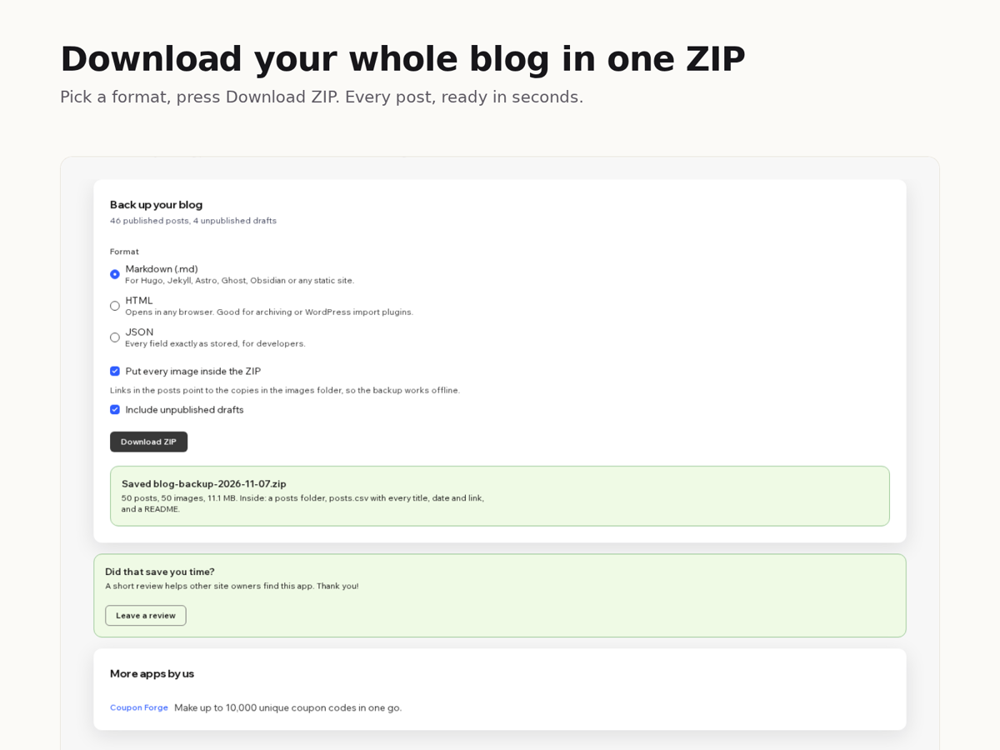

Blog Backup
Download all blog posts as Markdown or HTML
- Every post as its own Markdown, HTML or JSON file
- A spreadsheet of all posts with dates, links and word counts
- Titles, dates, categories and tags kept in each file
- Images saved inside the ZIP so the backup works offline
- Unpublished drafts included on Premium

What it does
Your blog posts live inside your site, and there is no built-in button to download them. Blog Backup & Export adds one. Pick a format, press Download ZIP, and a few seconds later you have a file on your computer with every post in it.
Markdown files start with front matter (title, date, slug, categories, tags, cover image and the original link), so they drop straight into Hugo, Jekyll, Astro, Ghost or an Obsidian vault. HTML files open in any browser. JSON keeps every field exactly as your site stores it. Headings, lists, quotes, links, code blocks, tables and images come across as real Markdown or HTML, not as one long paragraph. The ZIP also holds posts.csv, one row per post with its title, status, dates, link, category and word count, which is handy for content audits.
The free plan exports your 20 newest posts with image links left pointing at your site. Premium exports every post, puts each image in an images folder with the links rewritten to match, and adds unpublished drafts. Everything happens in your browser: the app has no server, stores nothing and sends your content nowhere.
Price
Free
- Your 20 newest posts
- Markdown, HTML or JSON
- posts.csv index and README
- Image links kept as they are
Premium
$4/month, $3/month billed yearly. For full backups and moving a blog
- Every published post, no limit
- Images inside the ZIP, links rewritten
- Unpublished drafts
- Everything in the free plan